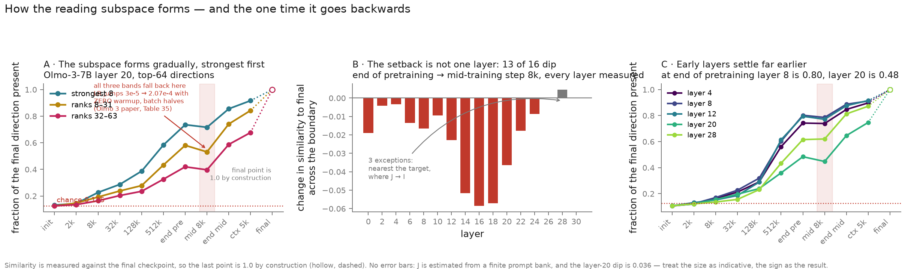
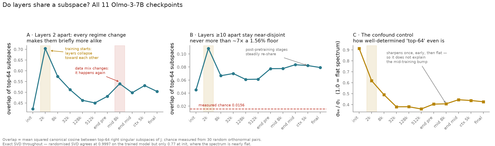

SVD directions can steer
Readable axes are rare, but one gender direction flips generated pronouns.
code · JSONA three-model study of what the Jacobian buys, whether its singular directions are interpretable, and how its transport subspaces form during training.
w = normalize(WU[Rome] − WU[Paris])
Mean change in the Rome−Paris logit contrast over 12 neutral prompts. Every direction is injected at the same L2 norm.
Median pullback-to-direct ratio across six contrasts. At the target layer J is the identity, so the endpoint is forced to 1.
Share of the full pullback effect recovered after keeping only the top k singular components of J.
Each application claim lands on an executable module and a compact checked-in result.
Readable axes are rare, but one gender direction flips generated pronouns.
code · JSONIt transports a precisely specified logit objective back to the source layer.
code · JSONThe intervention moves valid city-name slots, not beliefs about France or Italy.
code · JSONStrong directions appear first; nearby layers share more transport subspace.
code · JSONFigures regenerate from saved experiment summaries; no model inference is required.

